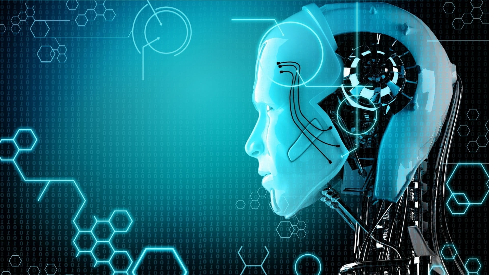

LinkS
Artificial intelligence (AI) is intelligence demonstrated by machines, unlike the natural intelligence displayed by humans and animals, which involves consciousness and emotionality. The distinction between the former and the latter categories is often revealed by the acronym chosen. 'Strong' AI is usually labelled as artificial general intelligence (AGI) while attempts to emulate 'natural' intelligence have been called artificial biological intelligence (ABI). Leading AI textbooks define the field as the study of "intelligent agents": any device that perceives its environment and takes actions that maximize its chance of achieving its goals.Colloquially, the term "artificial intelligence" is often used to describe machines that mimic "cognitive" functions that humans associate with the human mind, such as "learning" and "problem solving". As machines become increasingly capable, tasks considered to require "intelligence" are often removed from the definition of AI, a phenomenon known as the AI effect.A quip in Tesler's Theorem says "AI is whatever hasn't been done yet."For instance, optical character recognition is frequently excluded from things considered to be AI,having become a routine technology.Modern machine capabilities generally classified as AI include successfully understanding human speech,competing at the highest level in strategic game systems (such as chess and Go),and also imperfect-information games like poker,self-driving cars, intelligent routing in content delivery networks, and military simulations. Artificial intelligence was founded as an academic discipline in 1955, and in the years since has experienced several waves of optimism,followed by disappointment and the loss of funding (known as an "AI winter"),followed by new approaches, success and renewed funding.After AlphaGo defeated a professional Go player in 2015, artificial intelligence once again attracted widespread global attention.For most of its history, AI research has been divided into sub-fields that often fail to communicate with each other.These sub-fields are based on technical considerations, such as particular goals (e.g. "robotics" or "machine learning"),the use of particular tools ("logic" or artificial neural networks), or deep philosophical differences.Sub-fields have also been based on social factors (particular institutions or the work of particular researchers). The traditional problems (or goals) of AI research include reasoning, knowledge representation, planning, learning, natural language processing, perception and the ability to move and manipulate objects.AGI is among the field's long-term goals.Approaches include statistical methods, computational intelligence, and traditional symbolic AI. Many tools are used in AI, including versions of search and mathematical optimization, artificial neural networks, and methods based on statistics, probability and economics. The AI field draws upon computer science, information engineering, mathematics, psychology, linguistics, philosophy, and many other fields. The field was founded on the assumption that human intelligence "can be so precisely described that a machine can be made to simulate it".This raises philosophical arguments about the mind and the ethics of creating artificial beings endowed with human-like intelligence. These issues have been explored by myth, fiction and philosophy since antiquity.Some people also consider AI to be a danger to humanity if it progresses unabated.Others believe that AI, unlike previous technological revolutions, will create a risk of mass unemployment.In the twenty-first century, AI techniques have experienced a resurgence following concurrent advances in computer power, large amounts of data, and theoretical understanding; and AI techniques have become an essential part of the technology industry, helping to solve many challenging problems in computer science, software engineering and operations research.
Thought-capable artificial beings appeared as storytelling devices in antiquity,and have been common in fiction, as in Mary Shelley's Frankenstein or Karel Čapek's R.U.R.These characters and their fates raised many of the same issues now discussed in the ethics of artificial intelligence. The study of mechanical or "formal" reasoning began with philosophers and mathematicians in antiquity. The study of mathematical logic led directly to Alan Turing's theory of computation, which suggested that a machine, by shuffling symbols as simple as "0" and "1", could simulate any conceivable act of mathematical deduction. This insight, that digital computers can simulate any process of formal reasoning, is known as the Church–Turing thesis.Along with concurrent discoveries in neurobiology, information theory and cybernetics, this led researchers to consider the possibility of building an electronic brain. Turing proposed changing the question from whether a machine was intelligent, to "whether or not it is possible for machinery to show intelligent behaviour".[40] The first work that is now generally recognized as AI was McCullouch and Pitts' 1943 formal design for Turing-complete "artificial neurons".[41] The field of AI research was born at a workshop at Dartmouth College in 1956,where the term "Artificial Intelligence" was coined by John McCarthy to distinguish the field from cybernetics and escape the influence of the cyberneticist Norbert Wiener.Attendees Allen Newell (CMU), Herbert Simon (CMU), John McCarthy (MIT), Marvin Minsky (MIT) and Arthur Samuel (IBM) became the founders and leaders of AI research.They and their students produced programs that the press described as "astonishing":computers were learning checkers

The field of AI research was born at a workshop at Dartmouth College in 1956, where the term "Artificial Intelligence" was coined by John McCarthy to distinguish the field from cybernetics and escape the influence of the cyberneticist Norbert Wiener.Attendees Allen Newell (CMU), Herbert Simon (CMU), John McCarthy (MIT), Marvin Minsky (MIT) and Arthur Samuel (IBM) became the founders and leaders of AI research.They and their students produced programs that the press described as "astonishing":computers were learning checkers strategies (c. 1954)[46] (and by 1959 were reportedly playing better than the average human),[47] solving word problems in algebra, proving logical theorems (Logic Theorist, first run c. 1956) and speaking English.[48] By the middle of the 1960s, research in the U.S. was heavily funded by the Department of Defense[49] and laboratories had been established around the world.[50] AI's founders were optimistic about the future: Herbert Simon predicted, "machines will be capable, within twenty years, of doing any work a man can do". Marvin Minsky agreed, writing, "within a generation ... the problem of creating 'artificial intelligence' will substantially be solved".[13] They failed to recognize the difficulty of some of the remaining tasks. Progress slowed and in 1974, in response to the criticism of Sir James Lighthilland ongoing pressure from the US Congress to fund more productive projects, both the U.S. and British governments cut off exploratory research in AI. The next few years would later be called an "AI winter",a period when obtaining funding for AI projects was difficult. In the early 1980s, AI research was revived by the commercial success of expert systems,a form of AI program that simulated the knowledge and analytical skills of human experts. By 1985, the market for AI had reached over a billion dollars. At the same time, Japan's fifth generation computer project inspired the U.S and British governments to restore funding for academic research.However, beginning with the collapse of the Lisp Machine market in 1987, AI once again fell into disrepute, and a second, longer-lasting hiatus began. The development of metal–oxide–semiconductor (MOS) very-large-scale integration (VLSI), in the form of complementary MOS (CMOS) transistor technology, enabled the development of practical artificial neural network (ANN) technology in the 1980s. A landmark publication in the field was the 1989 book Analog VLSI Implementation of Neural Systems by Carver A. Mead and Mohammed Ismail. In the late 1990s and early 21st century, AI began to be used for logistics, data mining, medical diagnosis and other areas.The success was due to increasing computational power (see Moore's law and transistor count), greater emphasis on solving specific problems, new ties between AI and other fields (such as statistics, economics and mathematics), and a commitment by researchers to mathematical methods and scientific standards.Deep Blue became the first computer chess-playing system to beat a reigning world chess champion, Garry Kasparov, on 11 May 1997. In 2011, in a Jeopardy! quiz show exhibition match, IBM's question answering system, Watson, defeated the two greatest Jeopardy! champions, Brad Rutter and Ken Jennings, by a significant margin.Faster computers, algorithmic improvements, and access to large amounts of data enabled advances in machine learning and perception; data-hungry deep learning methods started to dominate accuracy benchmarks around 2012.The Kinect, which provides a 3D body–motion interface for the Xbox 360 and the Xbox One, uses algorithms that emerged from lengthy AI researchas do intelligent personal assistants in smartphones.In March 2016, AlphaGo won 4 out of 5 games of Go in a match with Go champion Lee Sedol, becoming the first computer Go-playing system to beat a professional Go player without handicaps.In the 2017 Future of Go Summit, AlphaGo won a three-game match with Ke Jie,who at the time continuously held the world No. 1 ranking for two years.Deep Blue's Murray Campbell called AlphaGo's victory "the end of an era... board games are more or less done and it's time to move on."This marked the completion of a significant milestone in the development of Artificial Intelligence as Go is a relatively complex game, more so than Chess. AlphaGo was later improved, generalized to other games like chess, with AlphaZero;and MuZeroto play many different video games, that were previously handled separately,in addition to board games. Other programs handle imperfect-information games; such as for poker at a superhuman level, Pluribus (poker bot)and Cepheus (poker bot).See: General game playing. According to Bloomberg's Jack Clark, 2015 was a landmark year for artificial intelligence, with the number of software projects that use AI within Google increased from a "sporadic usage" in 2012 to more than 2,700 projects. Clark also presents factual data indicating the improvements of AI since 2012 supported by lower error rates in image processing tasks.He attributes this to an increase in affordable neural networks, due to a rise in cloud computing infrastructure and to an increase in research tools and datasets.Other cited examples include Microsoft's development of a Skype system that can automatically translate from one language to another and Facebook's system that can describe images to blind people.In a 2017 survey, one in five companies reported they had "incorporated AI in some offerings or processes".Around 2016, China greatly accelerated its government funding; given its large supply of data and its rapidly increasing research output, some observers believe it may be on track to becoming an "AI superpower". By 2020, Natural Language Processing systems such as the enormous GPT-3 (then by far the largest artificial neural network) were matching human performance on pre-existing benchmarks, albeit without the system attaining commonsense understanding of the contents of the benchmarks.DeepMind's AlphaFold 2 (2020) demonstrated the ability to determine, in hours rather than months, the 3D structure of a protein. Facial recognition advanced to where, under some circumstances, some systems claim to have a 99% accuracy rate.
types of artificial intelegence

In 2020, we can classify artificial intelligence into 4 distinct types. The types are loosely similar to Maslov’s hierarchy of needs, where the simplest level only requires basic functioning and the most advanced level is the Mohammad, Buddha, Christian Saint, all-knowing, all-seeing, self-aware consciousness.
The four A.I. types are

Knowledge representation and knowledge engineering are central to classical AI research. Some "expert systems" attempt to gather explicit knowledge possessed by experts in some narrow domain. In addition, some projects attempt to gather the "commonsense knowledge" known to the average person into a database containing extensive knowledge about the world. Among the things a comprehensive commonsense knowledge base would contain are: objects, properties, categories and relations between objects; situations, events, states and time; causes and effects; knowledge about knowledge (what we know about what other people know); and many other, less well researched domains. A representation of "what exists" is an ontology: the set of objects, relations, concepts, and properties formally described so that software agents can interpret them. The semantics of these are captured as description logic concepts, roles, and individuals, and typically implemented as classes, properties, and individuals in the Web Ontology Language. The most general ontologies are called upper ontologies, which attempt to provide a foundation for all other knowledge by acting as mediators between domain ontologies that cover specific knowledge about a particular knowledge domain (field of interest or area of concern). Such formal knowledge representations can be used in content-based indexing and retrieval, scene interpretation, clinical decision support, knowledge discovery (mining "interesting" and actionable inferences from large databases),and other areas.

is the study of computer algorithms that improve automatically through experience and by the use of dataIt is seen as a part of artificial intelligence. Machine learning algorithms build a model based on sample data, known as "training data", in order to make predictions or decisions without being explicitly programmed to do so Machine learning algorithms are used in a wide variety of applications, such as in medicine, email filtering, and computer vision, where it is difficult or unfeasible to develop conventional algorithms to perform the needed tasks.A subset of machine learning is closely related to computational statistics, which focuses on making predictions using computers; but not all machine learning is statistical learning. The study of mathematical optimization delivers methods, theory and application domains to the field of machine learning. Data mining is a related field of study, focusing on exploratory data analysis through unsupervised learning. In its application across business problems, machine learning is also referred to as predictive analytics. <
As a simple example of stractured labeled data, we can consider the following table which contains the prices of the mobiles dependings on some features
| Sale price | Year | Mobile type |
| 2000 | 2015 | Samsoung |
| 4000 | 2017 | Samsoung |
| 6000 | 2018 | Apple |
| 10000 | 2020 | Apple |
Knowledge representation and knowledge engineering are central to classical AI research. Some "expert systems" attempt to gather explicit knowledge possessed by experts in some narrow domain. In addition, some projects attempt to gather the "commonsense knowledge" known to the average person into a database containing extensive knowledge about the world. Among the things a comprehensive commonsense knowledge base would contain are: objects, properties, categories and relations between objects; situations, events, states and time; causes and effects; knowledge about knowledge (what we know about what other people know); and many other, less well researched domains. A representation of "what exists" is an ontology: the set of objects, relations, concepts, and properties formally described so that software agents can interpret them. The semantics of these are captured as description logic concepts, roles, and individuals, and typically implemented as classes, properties, and individuals in the Web Ontology Language. The most general ontologies are called upper ontologies, which attempt to provide a foundation for all other knowledge by acting as mediators between domain ontologies that cover specific knowledge about a particular knowledge domain (field of interest or area of concern). Such formal knowledge representations can be used in content-based indexing and retrieval, scene interpretation, clinical decision support, knowledge discovery (mining "interesting" and actionable inferences from large databases),and other areas.
LinkS